Aprenda como fazer inferência estatística com o pacote Infer
Infer implementa uma gramática para realizar inferências estatísticas que conversas com o framework do tidyverse. Em vez de fornecer métodos para testes estatísticos específicos, este pacote consolida os princípios compartilhados entre os testes de hipóteses comuns em um conjunto de 4 verbos principais (funções), complementado com muitas utilidades para visualizar e extrair valor de seus resultados.
Independentemente do teste de hipótese que estamos utilizando, ainda estamos fazendo o mesmo tipo de pergunta: o efeito/diferença nos nossos dados observados é real ou devido ao acaso? Para responder a essa pergunta, começamos assumindo que os dados observados vieram de um mundo onde “nada está acontecendo” (ou seja, o efeito observado foi simplesmente devido ao acaso), e chamamos essa suposição de nossa hipótese nula. (Na realidade, talvez não acreditemos na hipótese nula de forma alguma—a hipótese nula é oposta à hipótese alternativa, que supõe que o efeito presente nos dados observados é realmente devido ao fato de que “algo está acontecendo.”).
Em seguida, calculamos uma estatística de teste a partir dos nossos dados que descreve o efeito observado. Podemos usar essa estatística de teste para calcular um valor p, dando a probabilidade de que nossos dados observados poderiam surgir se a hipótese nula fosse verdadeira. Se essa probabilidade estiver abaixo de algum nível de significância pré-definido α, então podemos rejeitar nossa hipótese nula.
O fluxo de trabalho deste pacote é projetado em torno dessa ideia. Começando com algum conjunto de dados,
Ao longo deste exemplo, utilizamos o gss, um conjunto de dados fornecido pelo infer, que contém uma amostra de 500 observações de 11 variáveis da Pesquisa Social Geral (General Social Survey).
# Carregar o pacote infer
library(infer)
# Carregar o pacote tidyverse
library(tidyverse)
# Carregar o conjunto de dados gss
data(gss)
# Visualizar a estrutura do conjunto de dados gss
glimpse(gss)Rows: 500
Columns: 11
$ year <dbl> 2014, 1994, 1998, 1996, 1994, 1996, 1990, 2016, 2000…
$ age <dbl> 36, 34, 24, 42, 31, 32, 48, 36, 30, 33, 21, 30, 38, …
$ sex <fct> male, female, male, male, male, female, female, fema…
$ college <fct> degree, no degree, degree, no degree, degree, no deg…
$ partyid <fct> ind, rep, ind, ind, rep, rep, dem, ind, rep, dem, de…
$ hompop <dbl> 3, 4, 1, 4, 2, 4, 2, 1, 5, 2, 4, 3, 4, 4, 2, 2, 3, 2…
$ hours <dbl> 50, 31, 40, 40, 40, 53, 32, 20, 40, 40, 23, 52, 38, …
$ income <ord> $25000 or more, $20000 - 24999, $25000 or more, $250…
$ class <fct> middle class, working class, working class, working …
$ finrela <fct> below average, below average, below average, above a…
$ weight <dbl> 0.8960034, 1.0825000, 0.5501000, 1.0864000, 1.082500…Neste exemplo, vamos passar pela condução de testes t e seu análogo baseado em randomização usando o pacote infer. Começaremos com um teste t de uma amostra, que compara a média de uma amostra com um valor médio verdadeiro hipotetizado.
Em seguida, discutiremos os testes t pareados, que são um caso especial dos testes t de uma amostra, e avaliaremos se as diferenças em valores pareados (por exemplo, alguma medida tomada de uma pessoa antes e depois de um experimento) diferem de 0.
Finalmente, concluiremos com testes t de duas amostras, testando a diferença nas médias de duas populações usando uma amostra de dados extraídos delas.
O teste t de 1 amostra pode ser usado para testar se uma amostra de dados contínuos poderia plausivelmente ter vindo de uma população com uma média especificada.
Como exemplo, vamos testar se o adulto americano médio trabalha 40 horas por semana usando dados do gss. Para isso, usaremos a variável hours, que indica o número de horas que os respondentes relataram ter trabalhado na semana anterior. A distribuição de horas nos dados observados é assim:
# Visualizar a distribuição da variável 'hours'
ggplot(gss, aes(x = hours)) +
geom_histogram(bins = 20, fill = "lightblue", color = "black") +
labs(title = "Distribuição de horas trabalhadas", x = "Horas", y = "Frequência") +
scale_x_continuous(breaks = seq(0, 100, 10)) +
theme_bw()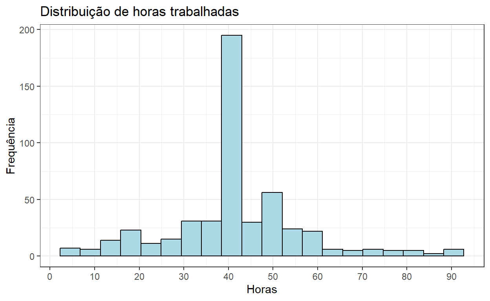
Parece que a maioria dos respondentes relatou ter trabalhado 40 horas, mas há uma variabilidade considerável. Vamos testar se temos evidências de que a verdadeira média de horas que os americanos trabalham por semana é 40.
O análogo baseado em randomização do teste t de 1 amostra no pacote infer é um teste de média de 1 amostra. Vamos começar demonstrando esse teste antes de mostrar como realizar um teste t baseado em teoria com o pacote.
Primeiro, para calcular a estatística observada, podemos usar specify() e calculate().
# Calcular a estatística observada
observed_statistic <- gss %>%
specify(response = hours) %>%
calculate(stat = "mean")
observed_statisticResponse: hours (numeric)
# A tibble: 1 × 1
stat
<dbl>
1 41.4A estatística observada é 41.382. Agora, queremos comparar essa estatística a uma distribuição nula, gerada sob a suposição de que a média era realmente 40, para ter uma ideia de quão provável seria observar essa média se o verdadeiro número de horas trabalhadas por semana na população fosse realmente 40.
Podemos gerar a distribuição nula usando o bootstrap. No bootstrap, para cada réplica, uma amostra de tamanho igual ao tamanho da amostra de entrada é extraída (com reposição) dos dados da amostra de entrada. Isso nos permite ter uma ideia de quanta variabilidade esperaríamos ver em toda a população, para que possamos entender quão improvável seria a média da nossa amostra.
Para ter uma ideia de como essas distribuições se parecem e onde nossa estatística observada se encontra, podemos usar visualize():
# visualizar
null_dist_1_sample %>%
visualize() +
shade_p_value(observed_statistic,
direction = "two-sided")+
theme_bw()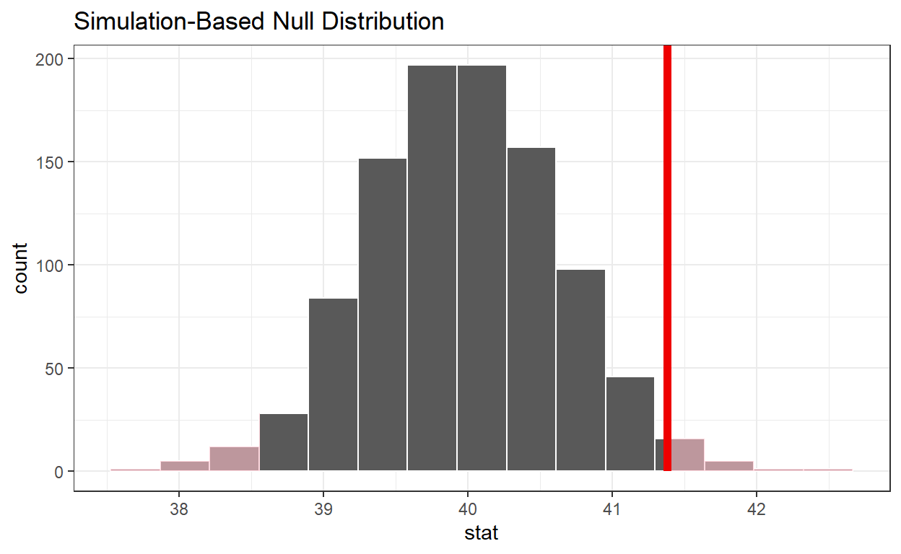
Parece que nossa média observada de 41.382 seria relativamente improvável se a verdadeira média fosse realmente 40 horas por semana. Mais precisamente, podemos calcular o valor p:
# calcular p valor
p_value_1_sample <- null_dist_1_sample %>%
get_p_value(obs_stat = observed_statistic,
direction = "two-sided")
p_value_1_sample# A tibble: 1 × 1
p_value
<dbl>
1 0.036Assim, se o verdadeiro número médio de horas trabalhadas por semana fosse realmente 40, nossa aproximação da probabilidade de observarmos uma estatística do teste tão ou mais extrema do que 41.382 é aproximadamente 0.044.
Analogamente aos passos mostrados acima, o pacote fornece uma função de envoltório, t_test, para realizar testes t de 1 amostra em dados organizados. Em vez de usar randomização, os envoltórios realizam o teste t baseado em teoria. A sintaxe se parece com isso:
t_test(gss, response = hours, mu = 40)# A tibble: 1 × 7
statistic t_df p_value alternative estimate lower_ci upper_ci
<dbl> <dbl> <dbl> <chr> <dbl> <dbl> <dbl>
1 2.09 499 0.0376 two.sided 41.4 40.1 42.7Uma abordagem alternativa ao envoltório t_test() é calcular a estatística observada com um pipeline do infer e depois fornecê-la à função pt do R base.
Observe que este pipeline para calcular uma estatística observada inclui uma chamada para hypothesize() já que a estatística t requer um valor médio hipotetizado.
Em seguida, colocando essa estatística t ao lado de sua distribuição associada usando a função pt:
Observe que as estatísticas t resultantes dessas duas abordagens baseadas em teoria são iguais.
Testes t de 2 Amostras avaliam a diferença nos valores médios de duas populações usando dados amostrados aleatoriamente da população que segue aproximadamente uma distribuição normal. Como exemplo, vamos testar se os americanos trabalham o mesmo número de horas por semana independentemente de terem ou não um diploma universitário usando dados do gss. As variáveis college e hours nos permitem fazer isso:
# Criar o boxplot
boxplot_college <- ggplot(gss, aes(x = college, y = hours, fill = college)) +
geom_boxplot(show.legend = F) +
labs(title = "Boxplot de Horas de Trabalho por Semana por Nível
de Educação",
x = "Educação",
y = "Horas de Trabalho por Semana") +
scale_fill_viridis_d()+
theme_bw()
density_college <- ggplot(gss, aes(x = hours, y = college, fill = college)) +
ggridges::geom_density_ridges(show.legend = F) +
labs(x = "Horas de Trabalho por Semana",
y = "Educação",
title = "Distribuição de Horas de Trabalho por Semana por Nível
de Educação")+
scale_fill_viridis_d() +
theme_bw()
library(patchwork)
boxplot_college / density_college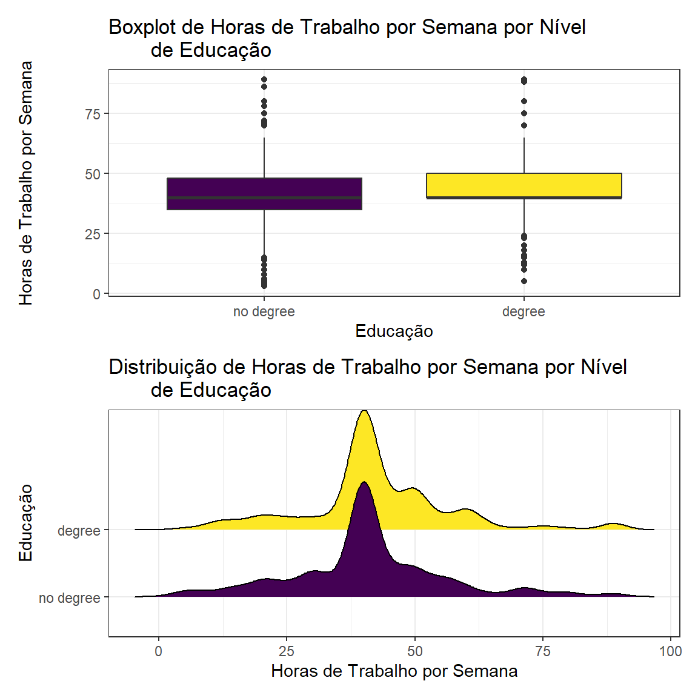
Parece que ambas essas distribuições estão centradas em torno de 40 horas por semana, mas a distribuição para aqueles com um diploma está ligeiramente inclinada para a direita.
Novamente, observe o aviso sobre valores ausentes—muitos valores dos respondentes estão ausentes. Se estivéssemos realmente realizando este teste de hipóteses, poderíamos investigar mais sobre como esses dados foram coletados; é possível que se um valor em uma dessas colunas estiver ausente ou não esteja relacionado ao que esse valor seria.
O análogo baseado em randomização do teste t de 2 amostras no pacote infer é um teste de diferença de médias. Vamos começar mostrando esse teste antes de demonstrar como realizar um teste t baseado em teoria com o pacote.
Assim como no teste de uma amostra, para calcular a diferença observada nas médias, podemos usar specify() e calculate().
# calcular a estatística observada
observed_statistic <- gss %>%
specify(hours ~ college) %>%
calculate(stat = "diff in means", order = c("degree", "no degree"))
observed_statisticResponse: hours (numeric)
Explanatory: college (factor)
# A tibble: 1 × 1
stat
<dbl>
1 1.54Observe que, na linha specify(hours ~ college), poderíamos ter substituído isso pela sintaxe specify(response = hours, explanatory = college)!
O argumento order na linha de calculate dá a ordem para subtrair os valores médios: no nosso caso, estamos pegando a média do número de horas trabalhadas por aqueles com um diploma menos a média do número de horas trabalhadas por aqueles sem um diploma; uma diferença positiva significaria que as pessoas com diplomas trabalharam mais do que aquelas sem diploma.
Agora, queremos comparar essa diferença nas médias com uma distribuição nula, gerada sob a suposição de que o número de horas trabalhadas por semana não tem relação com a posse ou não de um diploma universitário, para termos uma ideia de quão provável seria para nós vermos essa diferença observada nas médias se realmente não houvesse relação entre essas duas variáveis.
Podemos gerar a distribuição nula usando permutação, onde, para cada réplica, cada valor do status do diploma será atribuído aleatoriamente (sem reposição) a um novo número de horas trabalhadas por semana na amostra para quebrar qualquer associação entre os dois.
Novamente, observe que, nas linhas specify(hours ~ college) no trecho acima, poderíamos ter usado a sintaxe specify(response = hours, explanatory = college) em vez disso!
Para ter uma ideia de como essas distribuições se parecem e onde nossa estatística observada se encontra, podemos usar visualize().
# Visualize a distribuição nula baseada em randomização e a estatística do teste!
null_dist_2_sample %>%
visualize() +
shade_p_value(observed_statistic,
direction = "two-sided") +
theme_bw()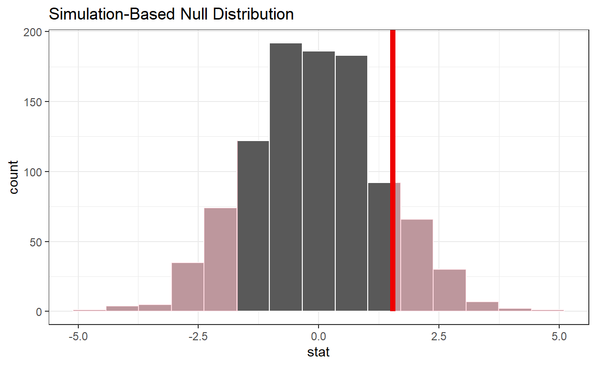
Parece que nossa estatística observada de 1.5384 seria improvável se realmente não houvesse relação entre o status do diploma e o número de horas trabalhadas. Mais precisamente, podemos calcular o valor p; valores p teóricos ainda não são suportados, então usaremos a distribuição nula baseada em randomização para calcular o valor p.
# calcular o valor p a partir da distribuição nula baseada em randomização e da estatística observada
p_value_2_sample <- null_dist_2_sample %>%
get_p_value(obs_stat = observed_statistic,
direction = "two-sided")
p_value_2_sample# A tibble: 1 × 1
p_value
<dbl>
1 0.252Assim, se realmente não houvesse relação entre o número de horas trabalhadas por semana e se alguém tem um diploma universitário, a probabilidade de vermos uma estatística tão ou mais extrema do que 1.5384 é aproximadamente 0.268.
Observe que, de forma semelhante aos passos mostrados acima, o pacote fornece uma função de envoltório, t_test, para realizar testes t de 2 amostras em dados organizados. A sintaxe se parece com isso:
t_test(x = gss,
formula = hours ~ college,
order = c("degree", "no degree"),
alternative = "two-sided")# A tibble: 1 × 7
statistic t_df p_value alternative estimate lower_ci upper_ci
<dbl> <dbl> <dbl> <chr> <dbl> <dbl> <dbl>
1 1.12 366. 0.264 two.sided 1.54 -1.16 4.24No exemplo acima, especificamos o relacionamento com a sintaxe fórmula = hours ~ college; também poderíamos ter escrito response = hours, explanatory = college.
Uma abordagem alternativa ao envoltório t_test() é calcular a estatística observada com um pipeline infer e, em seguida, fornecê-la à função pt do R base. Podemos calcular a estatística como antes, trocando o argumento stat = “diff in means” por stat = “t”.
# calcular a estatística observada
observed_statistic <- gss %>%
specify(hours ~ college) %>%
hypothesize(null = "point", mu = 40) %>%
calculate(stat = "t", order = c("degree", "no degree")) %>%
dplyr::pull()
observed_statistic t
1.11931 Observe que este pipeline para calcular uma estatística observada inclui hypothesize() já que a estatística t requer um valor médio hipotetizado.
Em seguida, colocando essa estatística t ao lado de sua distribuição associada usando a função pt:
Observe que os resultados dessas duas abordagens baseadas em teoria são quase os mesmos
ANOVAs são usadas para analisar diferenças nas médias de grupos.
Para realizar uma ANOVA, examinaremos a associação entre idade e afiliação partidária nos Estados Unidos. A variável age é uma variável numérica que mede a idade dos respondentes no momento em que a pesquisa foi realizada, e partyid é uma variável de fator com valores únicos ind, rep, dem, other.
Este é o aspecto da relação nos dados observados:
# Visualizar a relação entre idade e afiliação partidária
ggplot(gss, aes(x = partyid, y = age, fill=partyid)) +
geom_boxplot(show.legend = F) +
labs(title = "Relação entre Idade e Afiliação Partidária",
x = "Afiliação Partidária",
y = "Idade") +
scale_fill_viridis_d() +
theme_bw()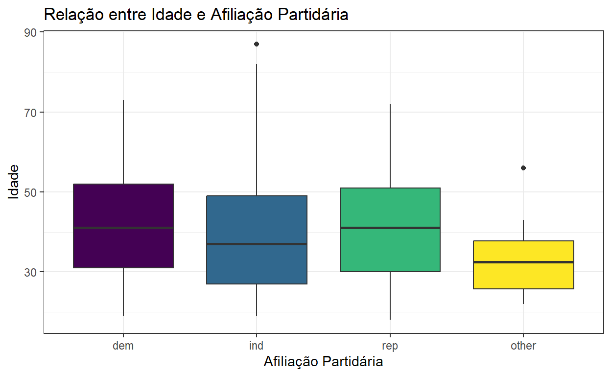
Se não houvesse relação, esperaríamos ver cada um desses boxplots alinhados ao longo do eixo y. Parece que a idade média dos democratas e republicanos é um pouco maior do que a dos eleitores independentes e de outros americanos. No entanto, essa diferença é apenas ruído aleatório?
Primeiro, para calcular a estatística observada, podemos usar specify() e calculate().
Aqui está o código para calcular a estatística observada:
# calcular a estatística observada
observed_f_statistic <- gss %>%
specify(age ~ partyid) %>%
hypothesize(null = "independence") %>%
calculate(stat = "F")
observed_f_statisticResponse: age (numeric)
Explanatory: partyid (factor)
Null Hypothesis: independence
# A tibble: 1 × 1
stat
<dbl>
1 2.48A estatística F observada é 2.4842. Agora, queremos comparar essa estatística a uma distribuição nula, gerada sob a suposição de que idade e afiliação partidária não estão realmente relacionadas, para termos uma ideia de quão provável seria vermos essa estatística observada se realmente não houvesse associação entre as duas variáveis.
Podemos gerar uma aproximação da distribuição nula usando randomização. A abordagem de randomização permuta as variáveis de resposta e explicativas, de modo que a afiliação partidária de cada pessoa seja combinada com uma idade aleatória da amostra para quebrar qualquer associação entre as duas.
Observe que, na linha specify(age ~ partyid) acima, poderíamos usar a sintaxe equivalente specify(response = age, explanatory = partyid).
Para ter uma ideia de como essa distribuição se parece e onde nossa estatística observada se encontra, podemos usar visualize():
# visualizar a distribução nula e a estatística teste
null_dist %>%
visualize() +
shade_p_value(observed_f_statistic,
direction = "greater") +
theme_bw()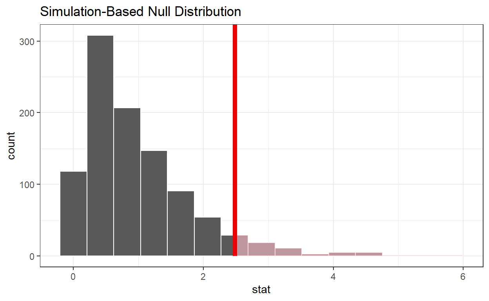
Também poderíamos visualizar a estatística observada em relação à distribuição nula teórica. Para isso, use o verbo assume() para definir uma distribuição nula teórica e depois passe-a para visualize() como uma distribuição nula gerada a partir de generate() e calculate().
# visualize a distribuição nula teórica e a estatística do teste!
null_dist_theory <- gss %>%
specify(age ~ partyid) %>%
assume(distribution = "F")
visualize(null_dist_theory) +
shade_p_value(observed_f_statistic,
direction = "greater") +
theme_bw()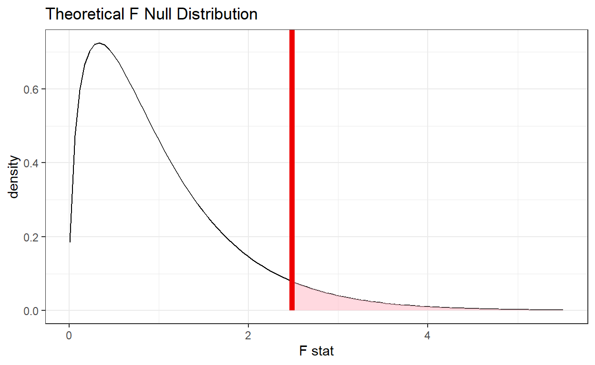
Para visualizar tanto as distribuições nulas baseadas em randomização quanto as teóricas e ter uma ideia de como as duas se relacionam, podemos canalizar a distribuição nula baseada em randomização para visualize(), e então fornecer method = “both” para visualize().
# visualize both null distributions and the test statistic!
null_dist %>%
visualize(method = "both") +
shade_p_value(observed_f_statistic,
direction = "greater") +
theme_bw()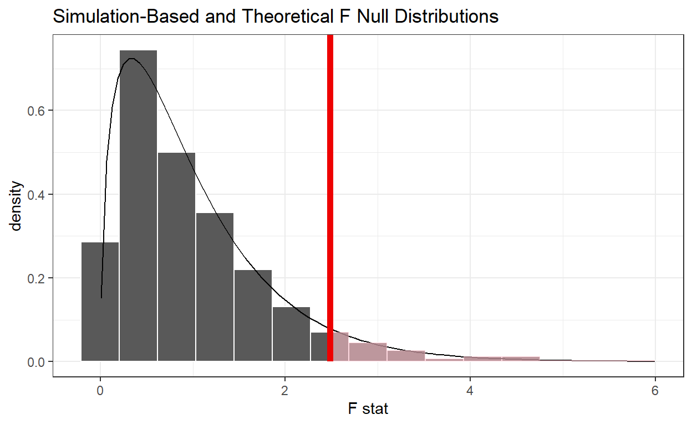
De qualquer forma, parece que nossa estatística de teste observada seria bastante improvável se realmente não houvesse associação entre idade e afiliação partidária. Mais precisamente, podemos aproximar o valor p a partir da aproximação baseada em randomização para a distribuição nula:
# # Calcular o valor p a partir da distribuição nula baseada em randomização e da estatística observada
p_value <- null_dist %>%
get_p_value(obs_stat = observed_f_statistic,
direction = "greater")
p_value# A tibble: 1 × 1
p_value
<dbl>
1 0.063Assim, se realmente não houvesse relação entre idade e afiliação partidária, nossa aproximação da probabilidade de ver uma estatística tão ou mais extrema que 2.4842 é aproximadamente 0.07.
Para calcular o valor p usando a verdadeira distribuição F, podemos usar a função pf do R base. Esta função nos permite situar a estatística de teste que calculamos anteriormente na distribuição F com os graus de liberdade apropriados.
pf(observed_f_statistic$stat, 3, 496, lower.tail = FALSE)[1] 0.06006016Observe que, embora a estatística observada permaneça a mesma, o valor p resultante difere ligeiramente entre essas duas abordagens, pois a distribuição F empírica baseada em randomização é uma aproximação da verdadeira distribuição F.
Vamos abordar a realização de um teste χ² (qui-quadrado) de independência e um teste de aderência qui-quadrado usando o infer. Começaremos com um teste qui-quadrado de independência, que pode ser usado para testar a associação entre duas variáveis categóricas.
Em seguida, passaremos para um teste de aderência qui-quadrado, que testa quão bem a distribuição de uma variável categórica pode ser aproximada por alguma distribuição teórica.
Para realizar um teste qui-quadrado de independência, examinaremos a associação entre renda e nível educacional nos Estados Unidos. college é uma variável categórica com valores degree e no degree, indicando se o respondente possui ou não um diploma universitário (incluindo faculdade comunitária), e finrela indica a autoidentificação da renda familiar do respondente, sendo classificada como muito abaixo da média, abaixo da média, média, acima da média, muito acima da média ou DK (não sei).
Veja como é essa relação nos dados amostrais:
ggplot(gss, aes(x = finrela, fill = college)) +
geom_bar(position = "fill") +
theme_bw() +
scale_fill_viridis_d() +
theme(axis.text.x = element_text(angle = 45, hjust = 1)) +
labs(title = "Relação entre Renda e Nível Educacional",
x = "Renda Familiar",
y = "Proporção",
fill = "Nível Educacional")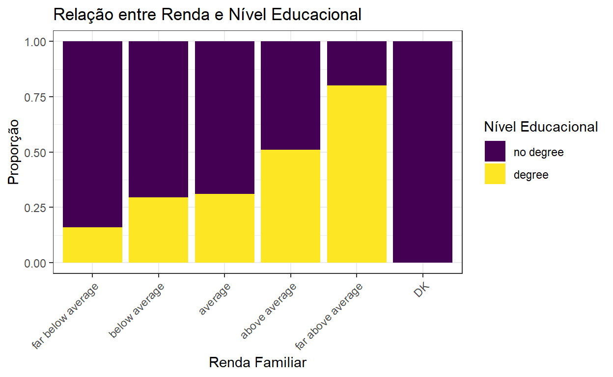
Se não houvesse relação, esperaríamos ver as barras roxas atingindo a mesma altura, independentemente da classe de renda. No entanto, as diferenças que vemos aqui são apenas devido a ruídos aleatórios?
Primeiro, para calcular a estatística observada, podemos usar specify() e calculate()
# calcular a estatística observada
observed_indep_statistic <- gss %>%
specify(college ~ finrela) %>%
hypothesize(null = "independence") %>%
calculate(stat = "Chisq")
observed_indep_statisticResponse: college (factor)
Explanatory: finrela (factor)
Null Hypothesis: independence
# A tibble: 1 × 1
stat
<dbl>
1 30.7A estatística observada do teste χ² é 30.6825. Agora, queremos comparar essa estatística a uma distribuição nula, gerada sob a suposição de que essas variáveis na verdade não estão relacionadas, para termos uma ideia de quão provável seria para nós vermos essa estatística observada se realmente não houvesse associação entre educação e renda.
Podemos gerar a distribuição nula de duas maneiras — usando métodos de randomização ou baseados em teoria. A abordagem de randomização aproxima a distribuição nula permutando as variáveis de resposta e explicativas, de modo que o nível de educação de cada pessoa seja combinado com uma renda aleatória da amostra para quebrar qualquer associação entre as duas.
Observe que, na linha specify(college ~ finrela) acima, poderíamos usar a sintaxe equivalente specify(response = college, explanatory = finrela). O mesmo vale para o código abaixo, que gera a distribuição nula usando métodos baseados em teoria em vez de randomização.
Para ter uma ideia de como essas distribuições se parecem e onde nossa estatística observada se encaixa, podemos usar a função visualize().
# Visualize a distribuição nula e a estatística de teste!
null_dist_sim %>%
visualize() +
shade_p_value(observed_indep_statistic,
direction = "greater") +
theme_bw()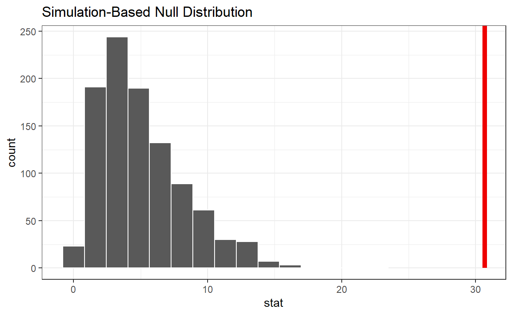
Também poderíamos visualizar a estatística observada em relação à distribuição nula teórica. Para isso, use o verbo assume() para definir uma distribuição nula teórica e, em seguida, passe-a para visualize() como uma distribuição nula gerada a partir de generate() e calculate().
# Visualize a distribuição nula teórica e a estatística de teste!
gss %>%
specify(college ~ finrela) %>%
assume(distribution = "Chisq") %>%
visualize() +
shade_p_value(observed_indep_statistic,
direction = "greater") +
theme_bw()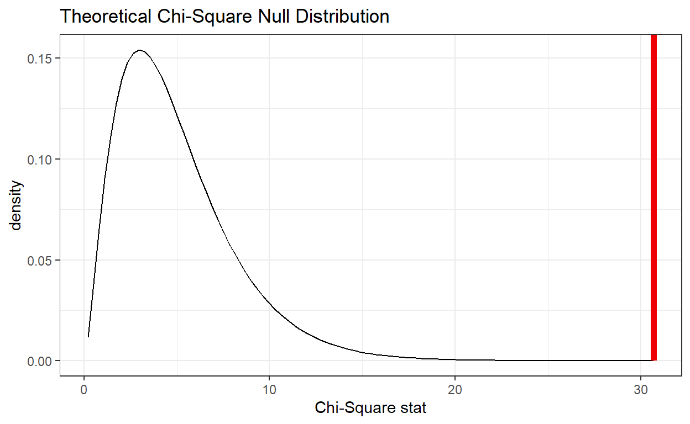
Para visualizar tanto as distribuições nulas baseadas em randomização quanto as teóricas para ter uma ideia de como as duas se relacionam, podemos encadear a distribuição nula baseada em randomização na função visualize(), e ainda fornecer o argumento method = “both”.
# Visualize ambas as distribuições nulas e a estatística de teste!
null_dist_sim %>%
visualize(method = "both") +
shade_p_value(observed_indep_statistic,
direction = "greater") +
theme_bw()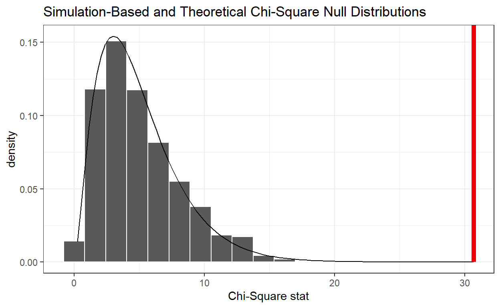
De qualquer forma, parece que nossa estatística de teste observada seria bastante improvável se na verdade não houvesse associação entre educação e renda. Mais precisamente, podemos aproximar o valor p com get_p_value:
# Calcule o valor p a partir da estatística observada e da distribuição nula.
p_value_independence <- null_dist_sim %>%
get_p_value(obs_stat = observed_indep_statistic,
direction = "greater")
p_value_independence# A tibble: 1 × 1
p_value
<dbl>
1 0Assim, se realmente não houvesse relação entre educação e renda, nossa aproximação da probabilidade de vermos uma estatística tão ou mais extrema que 30.6825 é aproximadamente 0.
Para calcular o valor p usando a verdadeira distribuição χ², podemos usar a função pchisq do R base. Esta função nos permite situar a estatística de teste que calculamos anteriormente na distribuição χ² com os graus de liberdade apropriados.
pchisq(observed_indep_statistic$stat, 5, lower.tail = FALSE) X-squared
1.082094e-05 Observe que, de forma equivalente à abordagem baseada em teoria mostrada acima, o pacote fornece uma função envoltória, chisq_test, para realizar testes qui-quadrado de independência em dados organizados. A sintaxe é a seguinte:
chisq_test(gss, college ~ finrela)# A tibble: 1 × 3
statistic chisq_df p_value
<dbl> <int> <dbl>
1 30.7 5 0.0000108Agora, passando para um teste de aderência do qui-quadrado, vamos analisar a classe de renda autoidentificada de nossos entrevistados. Suponhamos que nossa hipótese nula seja que ‘finrela’ segue uma distribuição uniforme (ou seja, há um número igual de pessoas que descrevem sua renda como muito abaixo da média, abaixo da média, média, acima da média, muito acima da média ou que não sabem sua renda). O gráfico abaixo representa esta hipótese:
gss %>%
ggplot(aes(x = finrela, fill = finrela)) +
geom_bar(show.legend = F) +
labs(x = "Renda", y = "Nº de respostas") +
scale_fill_viridis_d() +
theme_bw()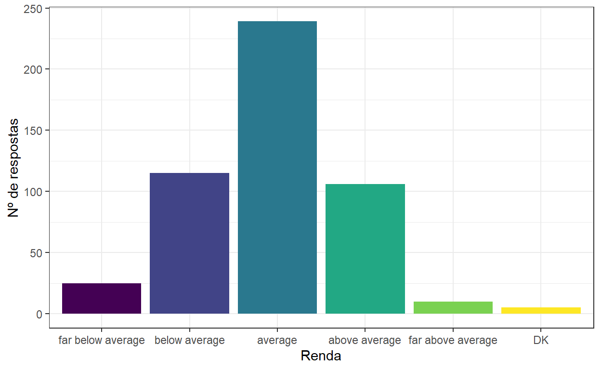
Parece que uma distribuição uniforme pode não ser a descrição mais apropriada dos dados – muito mais pessoas descrevem sua renda como média do que qualquer uma das outras opções. Vamos agora testar se essa diferença nas distribuições é estatisticamente significativa.
Primeiro, para realizar este teste de hipótese, calcularíamos nossa estatística observada
# calculando a distribuição nula
observed_gof_statistic <- gss %>%
specify(response = finrela) %>%
hypothesize(null = "point",
p = c("far below average" = 1/6,
"below average" = 1/6,
"average" = 1/6,
"above average" = 1/6,
"far above average" = 1/6,
"DK" = 1/6)) %>%
calculate(stat = "Chisq")
observed_gof_statisticResponse: finrela (factor)
Null Hypothesis: point
# A tibble: 1 × 1
stat
<dbl>
1 488.A estatística observada é 487,984. Agora, gerando uma distribuição nula, basta inserir uma chamada para generate():
# gerando uma distribuição nula, assumindo que cada classe de renda é igualmente provável
null_dist_gof <- gss %>%
specify(response = finrela) %>%
hypothesize(null = "point",
p = c("far below average" = 1/6,
"below average" = 1/6,
"average" = 1/6,
"above average" = 1/6,
"far above average" = 1/6,
"DK" = 1/6)) %>%
generate(reps = 1000, type = "draw") %>%
calculate(stat = "Chisq")Novamente, para ter uma ideia de como essas distribuições se parecem e onde nossa estatística observada se encaixa, podemos usar visualize():
# visualizar a distribuição nula e a estatística teste
null_dist_gof %>%
visualize() +
shade_p_value(observed_gof_statistic,
direction = "greater") +
theme_bw()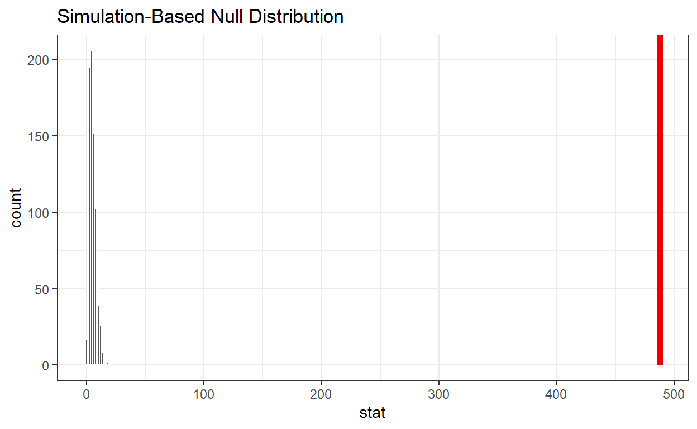
Essa estatística parece ser bastante improvável se a autoidentificação da classe de renda realmente seguisse uma distribuição uniforme! Mas quão improvável? Calculando o valor p:
# calcular o p-valor
p_value_gof <- null_dist_gof %>%
get_p_value(observed_gof_statistic,
direction = "greater")
p_value_gof# A tibble: 1 × 1
p_value
<dbl>
1 0Assim, se cada classe de renda autoidentificada fosse igualmente provável de ocorrer, nossa aproximação da probabilidade de vermos uma distribuição como a que observamos é aproximadamente 0.
Para calcular o valor p usando a verdadeira distribuição χ², podemos usar a função pchisq do R base. Essa função nos permite situar a estatística de teste que calculamos anteriormente na distribuição χ² com os graus de liberdade apropriados.
pchisq(observed_gof_statistic$stat, 5, lower.tail = FALSE)[1] 3.131231e-103Novamente, de forma equivalente à abordagem baseada em teoria mostrada acima, o pacote fornece uma função de envoltório, chisq_test, para realizar testes de aderência do Qui-Quadrado em dados organizados. A sintaxe é a seguinte:
chisq_test(gss,
response = finrela,
p = c("far below average" = 1/6,
"below average" = 1/6,
"average" = 1/6,
"above average" = 1/6,
"far above average" = 1/6,
"DK" = 1/6))# A tibble: 1 × 3
statistic chisq_df p_value
<dbl> <dbl> <dbl>
1 488. 5 3.13e-103Agora, iremos percorrer a realização de um teste de independência pareado baseado em randomização com o pacote infer.
Dois conjuntos de observações são emparelhados se cada observação em uma coluna tem uma correspondência especial ou conexão com exatamente uma observação na outra. Para os propósitos deste manual, vamos simular uma variável de dados adicional com um emparelhamento natural: suponha que cada um desses respondentes da pesquisa tenha fornecido o número de horas trabalhadas por semana quando pesquisado 5 anos antes, codificado como hours_previous
set.seed(1)
gss_paired <- gss %>%
mutate(
hours_previous = hours + 5 - rpois(nrow(.), 4.8),
diff = hours - hours_previous
)
gss_paired %>%
select(hours, hours_previous, diff)# A tibble: 500 × 3
hours hours_previous diff
<dbl> <dbl> <dbl>
1 50 52 -2
2 31 32 -1
3 40 40 0
4 40 37 3
5 40 42 -2
6 53 50 3
7 32 28 4
8 20 19 1
9 40 40 0
10 40 43 -3
# ℹ 490 more rowsO número de horas trabalhadas por semana por um determinado respondente tem uma correspondência especial com o número de horas trabalhadas 5 anos antes, hours_previous, pelo mesmo respondente. Gostaríamos de testar a hipótese nula de que a “média” de horas trabalhadas por semana não mudou entre o tempo amostrado e cinco anos antes.
Para realizar inferência em dados emparelhados com o pacote infer, pré-calculamos a diferença entre os valores emparelhados no início da análise e usamos essas diferenças como nossos valores de interesse.
Aqui, pré-calculamos a diferença entre as observações emparelhadas como diff. A distribuição de diff nos dados observados parece com isso:
gss_paired %>%
ggplot(aes(x = diff))+
geom_histogram(bins = 13)+
theme_bw() +
labs(x="Diferença de horas", y="Nº de respostas")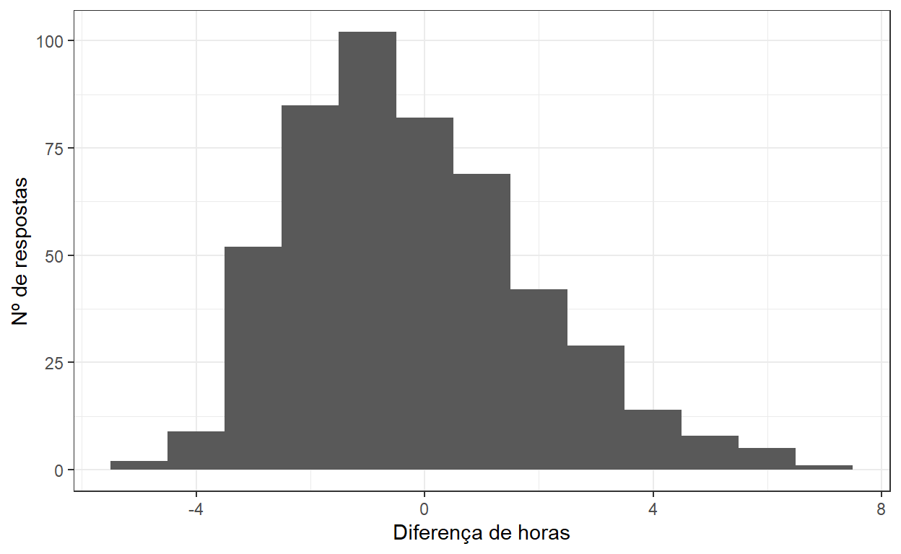
Pelo aspecto da distribuição, a maioria dos respondentes trabalhou um número semelhante de horas por semana como havia trabalhado 5 horas antes, embora pareça que pode haver uma ligeira queda no número de horas trabalhadas por semana em conjunto. (Sabemos que o verdadeiro efeito é de -0.2, pois simulamos esses dados.)
Calculamos a estatística observada no ambiente emparelhado da mesma forma que faríamos fora do ambiente emparelhado. Usando specify() e calculate():
# calcular a estatística observada
observed_statistic <-
gss_paired %>%
specify(response = diff) %>%
calculate(stat = "mean")
observed_statisticResponse: diff (numeric)
# A tibble: 1 × 1
stat
<dbl>
1 -0.202A estatística observada é -0.202. Agora, queremos comparar essa estatística com uma distribuição nula, gerada sob a suposição de que a verdadeira diferença era realmente zero, para ter uma ideia de quão provável seria para nós vermos essa diferença observada se não houvesse realmente mudança no número de horas trabalhadas por semana na população.
Testes para dados emparelhados são realizados através do argumento null = “paired independence” para a função hypothesize().
# gerar a distribuição nula
null_dist <-
gss_paired %>%
specify(response = diff) %>%
hypothesize(null = "paired independence") %>%
generate(reps = 1000, type = "permute") %>%
calculate(stat = "mean")
null_distResponse: diff (numeric)
Null Hypothesis: paired independence
# A tibble: 1,000 × 2
replicate stat
<int> <dbl>
1 1 -0.146
2 2 0.19
3 3 0.042
4 4 0.034
5 5 -0.138
6 6 -0.03
7 7 0.174
8 8 0.066
9 9 0.01
10 10 0.13
# ℹ 990 more rowsPara cada réplica, generate() realiza type = “permute” com null = “paired independence” por meio de:
Para ter uma ideia de como essa distribuição se parece e onde nossa estatística observada se encontra, podemos usar visualize():
# visualizar a distribuição nula e a estatística observada
null_dist %>%
visualize() +
shade_p_value(observed_statistic,
direction = "two-sided") +
theme_bw()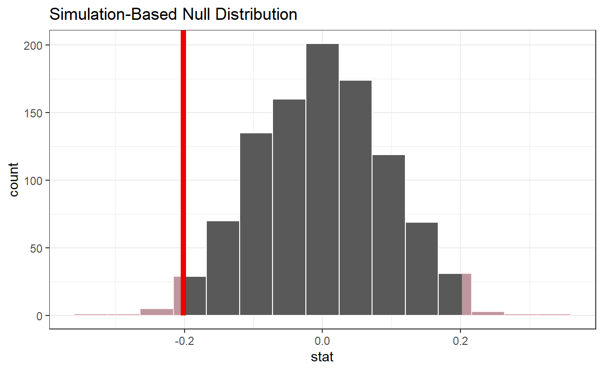
Parece que nossa média observada de -0.202 seria relativamente improvável se não houvesse realmente nenhuma mudança na média do número de horas trabalhadas por semana durante este período de tempo.
Mais precisamente, podemos calcular o valor p:
# calcular p-valor
p_value <- null_dist %>%
get_p_value(obs_stat = observed_statistic,
direction = "two-sided")
p_value# A tibble: 1 × 1
p_value
<dbl>
1 0.028Portanto, se a mudança na média do número de horas trabalhadas por semana durante este período de tempo fosse realmente zero, nossa aproximação da probabilidade de vermos uma estatística de teste tão ou mais extrema do que -0.202 é aproximadamente 0.028.
Também podemos gerar um intervalo de confiança bootstrap para a diferença média emparelhada usando type = “bootstrap” em generate(). Como antes, usamos as diferenças pré-calculadas ao gerar as reamostras bootstrap:
# gerar uma distribuição com bootstrap
boot_dist <-
gss_paired %>%
specify(response = diff) %>%
hypothesize(null = "paired independence") %>%
generate(reps = 1000, type = "bootstrap") %>%
calculate(stat = "mean")
visualize(boot_dist) + theme_bw()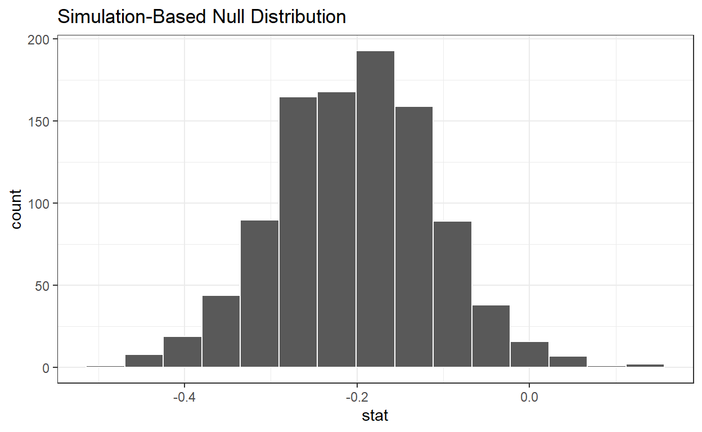
Observe que, ao contrário da distribuição nula das estatísticas de teste geradas anteriormente com type = “permute”, esta distribuição está centrada na estatística observada.
Calculando um intervalo de confiança:
# intervalo de confiança
confidence_interval <- boot_dist %>%
get_confidence_interval(level = .95)
confidence_interval# A tibble: 1 × 2
lower_ci upper_ci
<dbl> <dbl>
1 -0.390 -0.022Por padrão, get_confidence_interval() constrói os limites inferior e superior tomando as observações nos percentis \(\frac{(1−0.95)}{2}\) e \(1−\frac{(1−0.95)}{2}\). Para construir o intervalo de confiança usando o erro padrão da distribuição bootstrap, podemos escrever:
boot_dist %>%
get_confidence_interval(type = "se",
point_estimate = observed_statistic,
level = .95)# A tibble: 1 × 2
lower_ci upper_ci
<dbl> <dbl>
1 -0.383 -0.0210